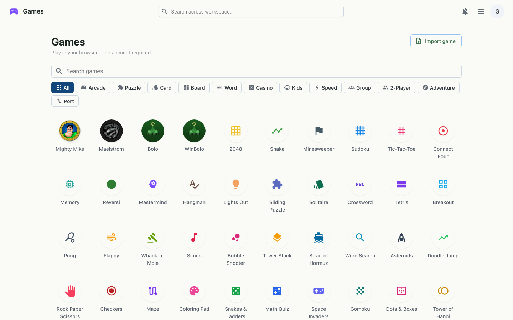

The arcade — over 100 browser games you can install and play offline, with category filters and high scores, native game ports compiled to run in the browser, and online multiplayer for the games you'd rather not play alone.
Games is a hub of more than a hundred ready-to-play titles — arcade, puzzle, board, card, word, casino and kids' games — that run entirely in your browser. No account is required: it works signed-out and signed-in alike. Install it as its own app and the whole collection plays with no connection at all. Beyond the hand-built games, the hub hosts genuine native games ported to run in the browser, and many of the turn-based and party games can be played online with friends over a shared link.

The headline attractions are real native games compiled to run on the web, complete with on-screen touch controls so they play on a phone as well as a desktop:
Plenty of games here are better with someone else. Bolo has full online play — create a room, share a link, and battle together in real time. Many turn-based games carry a 👥 icon that opens an online match you can invite someone into: Tic-Tac-Toe, Connect Four, Reversi, Gomoku, Checkers, Chess, Dots & Boxes, Mancala and Battleship — plus Monopoly Deal for 2–5 players. Prefer the same screen? Those games and more offer local two-player pass-and-play, with a slide-to-reveal privacy handoff for hidden-hand card and tile games.
Bundled games are trusted, self-contained HTML served from the workspace and opened directly; the native ports are compiled to WebAssembly and shipped the same way. A service worker registered for the games hub precaches the collection so the installed app works fully offline. Imported games are treated as untrusted: they only ever run inside a sandboxed iframe with an opaque origin, so they can't reach your workspace session, cookies or APIs. High scores live in the browser; online multiplayer connects players through shared rooms.